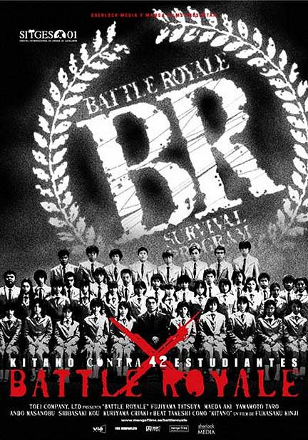

Battle Royale
En el amanecer de un nuevo milenio, el país está al borde del colapso. Millones de personas vagan sin empleo. La violencia en la escuela está descontrolada y adolescentes rebeldes protagonizan boicots masivos. El gobierno contrataca con “Battle Royale”. Cada año, una clase es escogida al azar para que se enfrente, en una isla abandonada, a un cruel juego de supervivencia. (FILMAFFINITY)
Released: 2000
Director: Kinji Fukasaku
Actors:
- Takeshi Kitano (Kitano-sensei)
- Aki Maeda (Noriko Nakagawa)
- Tatsuya Fujiwara (Shuya Nanahara)
- Chiaki Kuriyama (Takako Chigusa)
Related films: